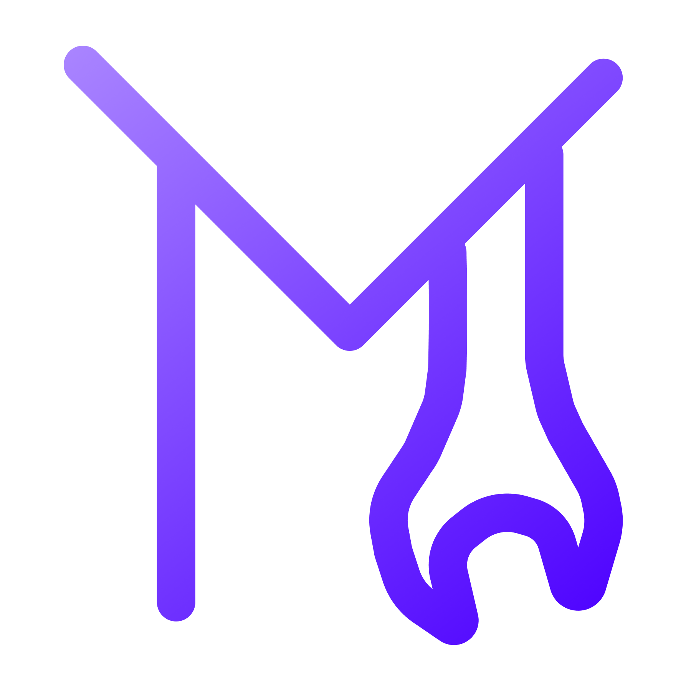
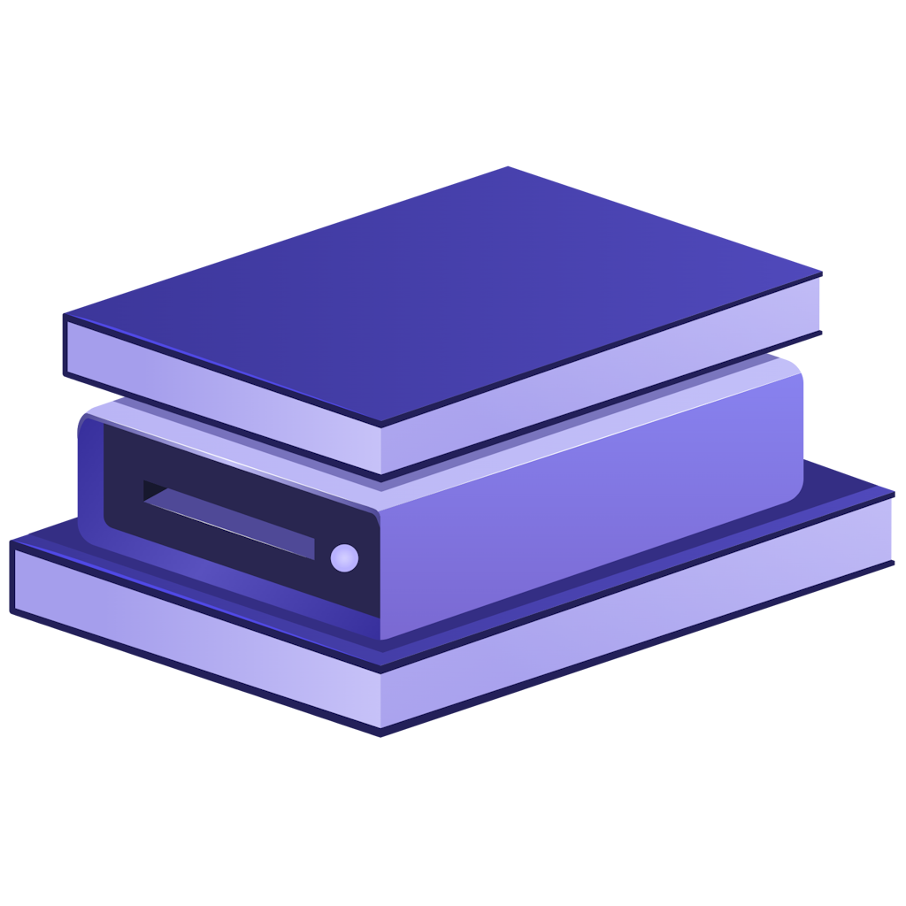
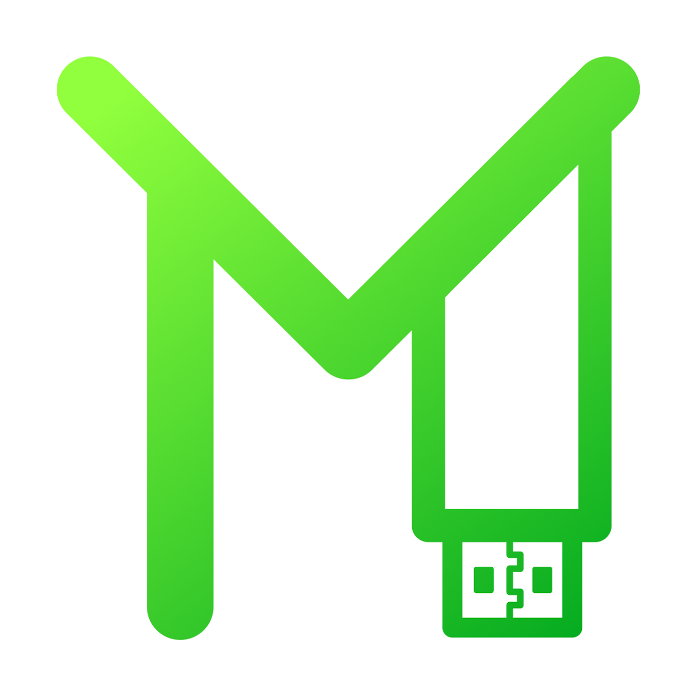

Добро пожаловать на Haiku!
Это проект, созданный на основе сайта Марка Аддерли.
Здесь вы по-прежнему можете скачать сборки MakuOS, оригинальные ISO-образы и MakuTweaker.
Мы активно развиваемся и добавляем новый контент, включая игры и сторонний софт!
Новая программа оболочка - Zatsu!
Гениальная разработка, призванная спасти тысячи людей от прокрастинации.
Zatsu - это кастомная оболочка системы, которая помогает сфокусироваться и не отвлекаться от учёбы или работы. Никаких игр и случайного думскроллинга - ведь в ней можно включить "белый список" приложений.
Встречайте! Возвращение сборок MakuOS спустя год!
Марк Аддерли переработал метод создания сборок.
Теперь используется только самописный скрипт и стандартные средства, что сводит вероятность возникновения каких-либо проблем к нулю! Все знакомые нововведения остались на месте, а также добавилось множество новых! Актуальные обновления по конец 2026 года, обновлённые установщики и новый портативный MakuTweaker в комплекте.
Скачать программы от Марка Аддерли:

MakuTweaker
Самый дружелюбный и полезный твикер для Windows.

Zatsu
Специальная оболочка, которая поможет сосредоточиться на учёбе или работе.
MakuTyper
Современный и полезный блокнот, идеально дополняющий дизайн Windows 11.

MakuFlash
Красивое и дружелюбное переосмысление программы для записи Windows на флешку.